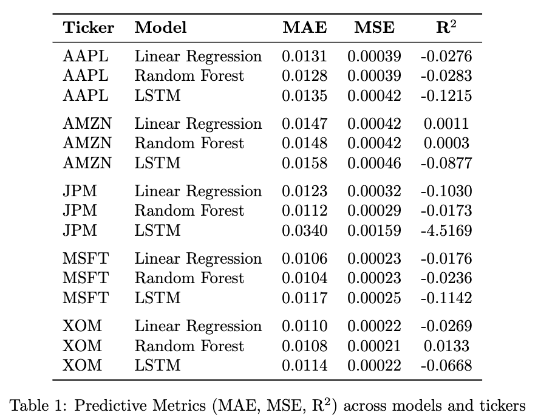

← Back
Causal Factor Discovery in S&P 500 Returns
A causal-inference toolkit using Double Machine Learning to estimate whether momentum actually causes next-day returns. The same counterfactual machinery, orthogonalizing out confounders to isolate causal effects, is now central to reasoning-model interpretability.
Double Machine Learning
Causal Inference
LSTM
Random Forest
yfinance
Python
Jupyter Notebook

The Core Question
Most ML applied to finance asks: "Can we predict tomorrow's return?" This project asks a harder question:
"Does short-term momentum cause tomorrow's return, or does it just correlate with it?"
The distinction matters enormously. A spurious correlation disappears when market conditions change.
A causal relationship: if it exists: is structural and should be more robust. We use
Double Machine Learning (DML), a method from econometrics, to answer this causally.
Why not just use a predictive model? Standard models (LSTMs, Random Forests) capture
correlations: including confounders. DML orthogonalizes the treatment variable (momentum) against all
confounders, isolating its direct causal effect on the outcome (next-day return).
Method: Double Machine Learning
DML (Chernozhukov et al., 2018) estimates causal effects in the presence of high-dimensional confounders
using a two-stage approach:
- Residualize the treatment: Fit a ML model to predict the treatment (3-day momentum) from all confounders. Compute residuals.
- Residualize the outcome: Fit a ML model to predict the outcome (next-day return) from all confounders. Compute residuals.
- Causal estimate: Regress outcome residuals on treatment residuals. The coefficient is the Average Treatment Effect (ATE): the causal effect of momentum on return.
Cross-fitting with K-folds prevents overfitting from biasing the causal estimate. Conditional ATE (CATE)
is also estimated per stock to capture heterogeneous effects.
Features Used
- Return: daily percentage return
- Momentum_3: 3-day return difference (treatment variable)
- Volatility_3: 3-day rolling standard deviation (confounder)
- MA_3, MA_5: 3-day and 5-day moving averages (confounders)
- VolumeLog: log-transformed volume (confounder)
- NextReturn: next-day return (outcome variable)
Data pulled from yfinance for 5 tickers: AAPL, MSFT, JPM, AMZN, XOM (2019–present).
Predictive Benchmarks
In parallel, we benchmark traditional predictive models to understand how much of the return variance
they capture: and compare to the DML causal estimate:
| Model |
Approach |
Metric |
| Linear Regression (OLS) |
Predictive |
MAE, MSE, R² |
| Random Forest |
Predictive |
MAE, MSE, R² |
| LSTM (2-layer, early stopping) |
Predictive |
MAE, MSE, R² |
| LSTM Ablation (base/deep/wide/deep-wide) |
Architecture study |
Training/val loss curves |
| DML (our method) |
Causal |
ATE, CATE per ticker |
Connection to Interpretability Research
The Double Machine Learning framework is the same counterfactual machinery now used in
reasoning-model interpretability. The key idea, hold all confounders fixed,
intervene on one variable, measure the causal effect on the outcome, translates directly to
questions like: "which chain-of-thought step actually causes the model's final answer?"
Building fluency with DML is building fluency with the formal tools for causal claims about
model internals.
References
- Chernozhukov et al. (2018). Double Machine Learning for Treatment and Structural Parameters. The Econometrics Journal.
- Gu, Kelly & Xiu (2020). Empirical Asset Pricing via Machine Learning. Review of Financial Studies.
- Athey & Imbens (2015). Causal Inference for Statistics, Social and Biomedical Sciences.